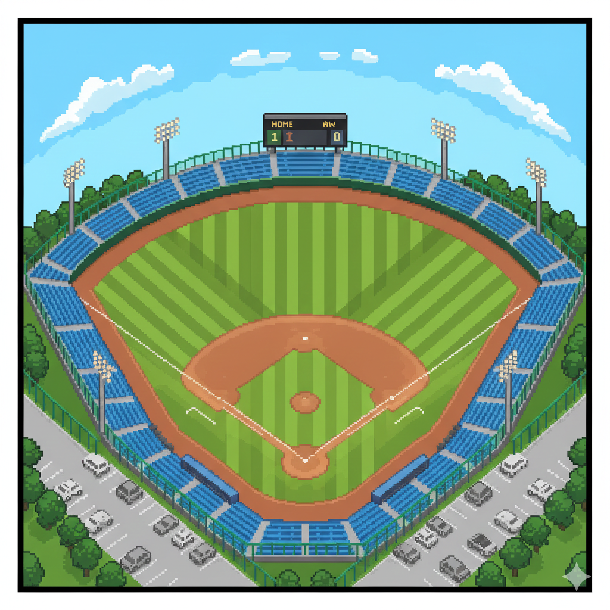

NATURAL FLOW CHAIR

中学生時代に部活動で野球をしていました。
朝練から、学校終わりのあとの部活動はもちろんのこと、土日にもほとんど練習や大会がありとても大変でした。
どんなにつらくてもあきらめず最後まで取り組む強い心が身に付きました。
- 年数：3年
- ポジション：レフトorライト

中学生時代に部活動で野球をしていました。
朝練から、学校終わりのあとの部活動はもちろんのこと、土日にもほとんど練習や大会がありとても大変でした。
どんなにつらくてもあきらめず最後まで取り組む強い心が身に付きました。